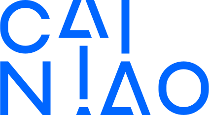
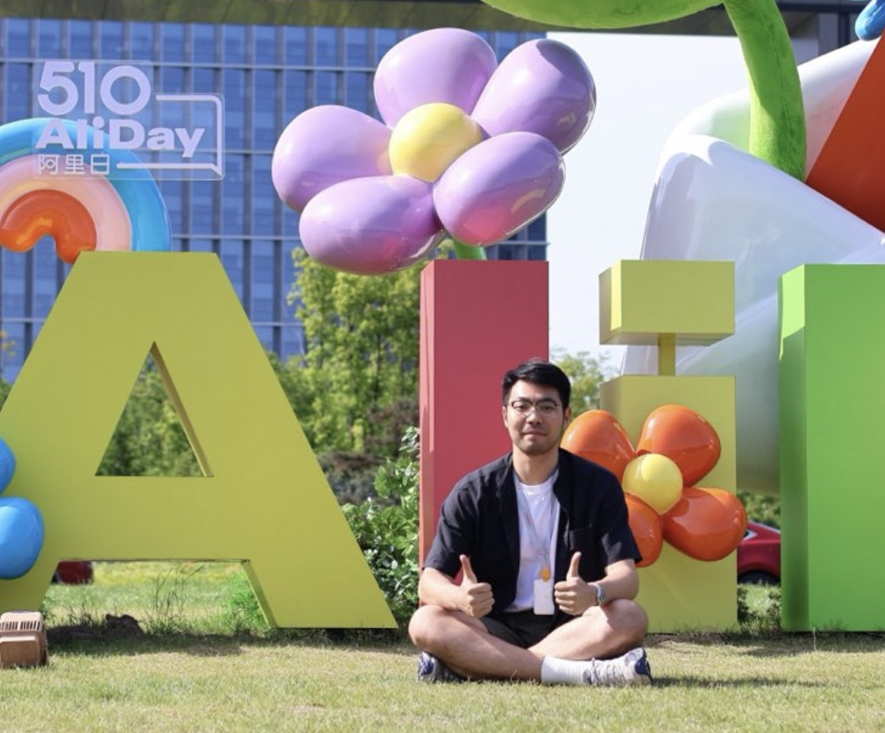
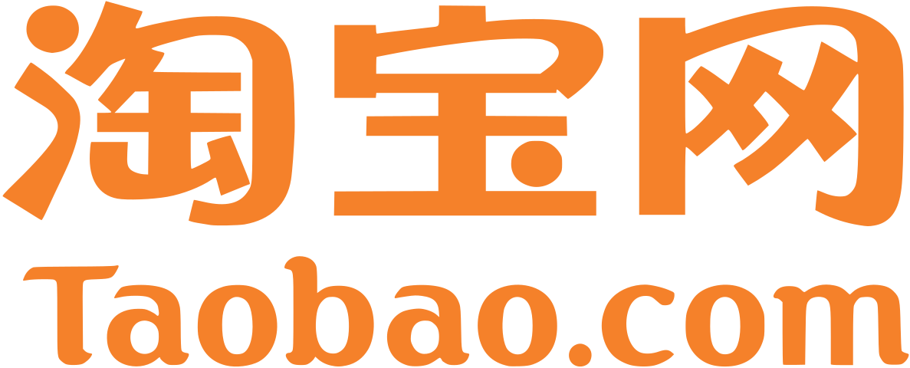
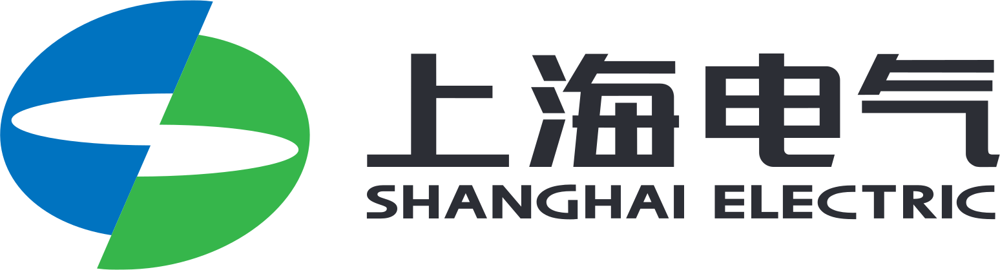
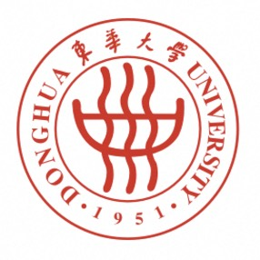
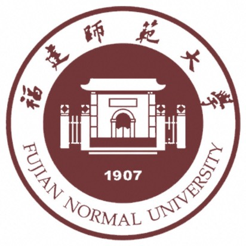

菜鸟 · 供应链 AI
负责 Agent Z 客户端与存量供应链软件 AI+ 产品，探索岗位 Agent 如何连接工具、系统和真实任务。
供应链 AI 产品经理，专注把岗位经验、业务系统与 AI Agent 结合，做成能进入真实工作流的产品。
我在阿里持续负责供应链与商家产品。近两年工作重心转向 AI：先后参与商家 AI 产品、供应链 Agent，以及存量供应链软件的 AI+ 改造。 我擅长从一线流程和系统规则中找到产品切口，再把复杂问题拆成团队可理解、用户可使用、业务可验证的方案。

CAREER / 2020 — NOW · 5 YEARS
5 年供应链产品经验，从 WMS、供应链商业化交付，逐步延伸到商家 AI 与供应链 Agent。

负责 Agent Z 客户端与存量供应链软件 AI+ 产品，探索岗位 Agent 如何连接工具、系统和真实任务。

负责「生意管家」AI 客户端产品框架设计，并负责商家物流履约 Agent 产品建设。
负责 WMS 等供应链产品与国际化项目交付，积累仓储、库存、履约和跨国协作经验。

参与 SRM 与供应链协同平台升级，负责供应商生命周期、订单协同、图纸协同和质量协同等产品模块。
从供应链计划、流程自动化和 WMS 实习项目起步，逐步转向供应链数字化产品。
从岗位职责与业务目标出发，设计 Agent 的任务、技能、系统连接和结果交付方式， 让 AI 能够进入供应链的日常工作流程。
熟悉仓储、库存、订单和履约场景，能把复杂规则转成系统产品方案， 并推动标准能力、定制项目与 AI+ 改造落地。
具备国际化项目交付经验和跨文化沟通能力， 致力于为全球客户提供优质的供应链产品服务。
AI NATIVE PRACTICE
连续 4 年深度使用 ChatGPT 等主流 AI 产品，将 AI 融入产品研究、需求分析、原型开发、数据分析与 Coding 协作。
CERTIFICATIONS
与当前产品方向相关的认证：

东华大学(Donghua University)
2020 - 2022
深入学习供应链理论与实践，掌握现代物流管理体系，为后续产品经理工作奠定扎实理论基础。

福建师范大学(Fujian Normal University)
2015 - 2019
系统学习物流与供应链基础理论，培养了对供应链业务的深度理解和敏锐洞察力。
以敏锐的业务洞察力和同理心，深刻挖掘业务痛点， 精准理解用户需求，实现高效的产品交付。
结合扎实的理论基础和丰富的实践经验， 运用系统性思维设计高效的供应链解决方案。
具备国际化项目交付经验和跨文化沟通能力， 致力于为全球客户提供优质的供应链产品服务。